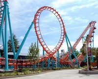

My Skills
I have skills as of for sports for Baseball, softball, and swimming.
I also know How to bake/cook. I am very good at adapting myself to
work with other people in their own environment. A little known fact
about myslef is that I was born a lefty but as I grew up my mom has
taught me to do everything with my right. Although, I pretty much do
everything with my right hand I still eat food with my left, but I can
also do it with my right.
Interests
Love to play softball, read,make crafts, and ride roller coasters.
My favorite roller coaster are supreme scream,Ghost rider,Montezoomas
revenge,Silver Bullet, and Hang time .

Family
I have 2 brothers one is my twin. My mom is a teacher she teaches
1st grade. My dad is a truck driver. My Grandma and Grandpa take care of
brothers and I. I have 3 dogs one is a pomeranian mix with
a chow chow his name is Baltazar. Another is a poodle mixed with a
terrier her name is Gypsy. And last but not least a chihuahua mixed
with a shih- tzu his name is Gizmo.